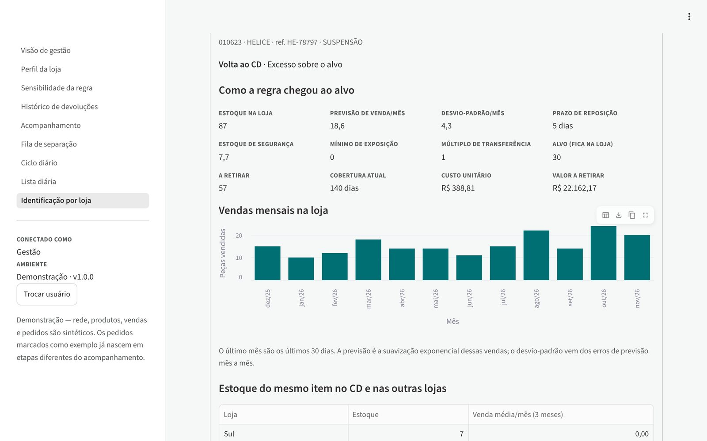
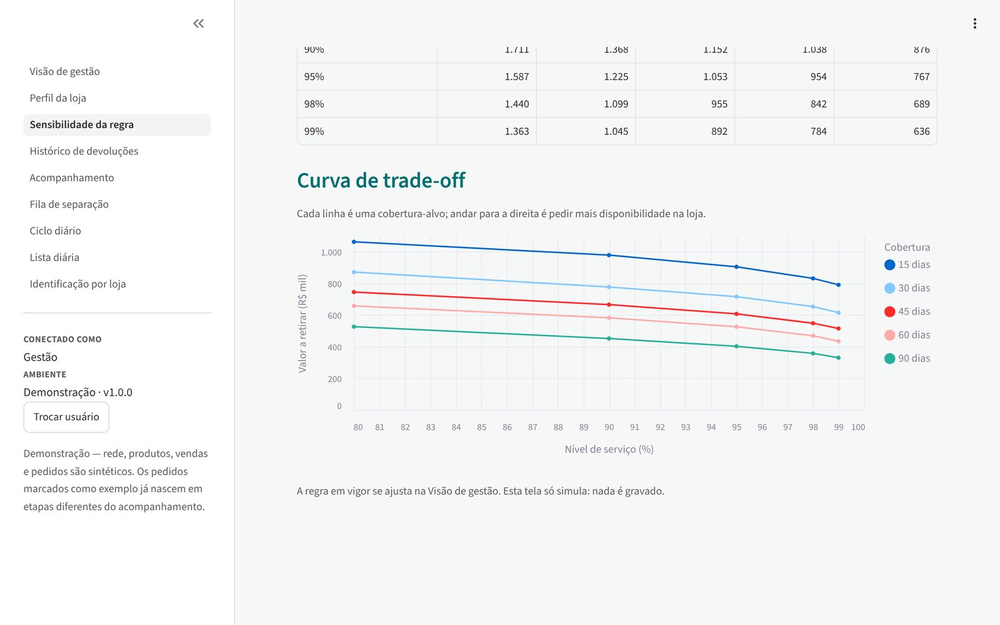

🔄 Aplicação de operação · Python/Streamlit · Dados sintéticos
Giro Reverso: o que deve voltar da loja para o CD, e onde está cada pedido.
Uma aplicação para a logística reversa de estoque parado numa rede de autopeças.
Previsão de demanda e estoque de segurança definem quanto cada loja precisa manter; o que passa disso
volta ao CD, num ciclo diário distribuído entre os compradores e acompanhado etapa por etapa.
5 lojas + 1 CD (fictícios)~1.200 peças · ~3.300 itens loja × produto · 12 meses de vendaPython · Streamlit · pandas · Polars · SQLAlchemy
Peça parada na loja é capital imobilizado e espaço de gôndola. Devolvê-la ao CD libera esse
capital para o resto da rede, mas o processo passa por quatro setores (Compras, Logística da loja,
Logística do CD e Garantia) e por um ERP que não liga sozinho "esta peça precisa voltar" a
"este pedido de devolução". Dois problemas:
Devolver demais custa caro. Se o que fica na loja não cobre a venda até a próxima reposição, o
CD manda a peça de volta: frete de ida e volta e ruptura no meio do caminho. A pergunta certa não é
"o que está parado?", e sim "quanto esta loja precisa manter?".
Ninguém via o processo. Sem um lugar único, não se sabia em que etapa cada pedido estava
nem onde ele travava.
A solução
Um único app com acesso por perfil, em que cada setor vê e registra só a sua parte:
Identificação→Ciclo diário→Emissão e vínculo→Separação→Saída da loja→Chegada no CD→Conferência→Reintegração
Identificação: aplica a regra a todo o estoque e mostra, por loja, o que sai, quanto sai, quanto vale e por quê.
Ciclo diário: a Gestão define pessoas × pedidos × SKUs por dia. A cada dia o app revalida os
candidatos no ERP (o que vendeu desde a foto sai da lista), monta o lote e distribui entre os compradores, cada um com o seu link.
Vínculo conferido: o pedido informado pelo comprador é checado no ERP. Ele precisa existir, não pode estar cancelado
nem ter produto fora do lote ou quantidade acima do "Retirar".
Acompanhamento: um kanban com 6 etapas, de Emitido a Reintegração no CD. Emissão e separação vêm do ERP e as demais
são confirmadas por quem é dono de cada uma. Um pedido parado há mais de 48 h fica em atenção.
Visão de gestão: parâmetros da regra, tempo médio por etapa (o gargalo), ciclo médio contra a meta e vínculos com
problema no ERP.
Acompanhamento: cada cartão é um pedido de devolução. Os vermelhos estão parados há mais de 48 h.
A regra: estoque-alvo por revisão periódica
Para cada item de cada loja, o app calcula quanto a loja precisa manter até a próxima reposição chegar, com uma
margem para a incerteza da demanda. O que passa disso volta ao CD.
μ = suavização exponencial simples das vendas mensais (12 meses, α = 0,3)
σ = desvio-padrão dos erros de previsão um passo à frente, com piso de Poisson √μ
S = d·(C + L) + z·σ·√((C + L)/30) (d = μ/30, C = cobertura-alvo, L = prazo de reposição, z = Φ⁻¹(nível de serviço))
S ↑ mínimo de exposição e ↑ múltiplo de transferência; retirar = estoque − S, ↓ múltiplo
É a política de estoque order-up-to com revisão periódica: o primeiro termo cobre a venda esperada até a reposição
seguinte e o segundo é o estoque de segurança para o nível de serviço escolhido. O piso de Poisson evita que um item com
histórico curto ou muito regular fique com segurança zero. Depois vêm as exclusões, na ordem: nada a retirar, lançamento (menos
de 90 dias de loja, histórico curto para prever), sazonal, em promoção e valor abaixo do mínimo que compensa o manuseio.

Ficha do item: cada termo da conta e o histórico de vendas que alimenta a previsão
O trade-off que a Gestão decide
Nível de serviço e cobertura-alvo são decisões de negócio, e a tela de sensibilidade mostra o preço de cada uma. Na base
sintética, com 95% e 30 dias, a lista tem 1.225 itens e devolve R$ 717 mil, 29% do valor em estoque da rede.
Valor a retirar (R$ mil)
15 dias
30 dias
60 dias
90 dias
Nível de serviço 80%
1.063
872
658
527
Nível de serviço 95%
905
717
526
403
Nível de serviço 99%
791
616
435
331
Leitura: a cobertura pesa mais que o nível de serviço. Passar de 95% para 99% segura cerca de
R$ 100 mil a mais nas lojas; dobrar a cobertura de 30 para 60 dias segura quase R$ 200 mil. É o tipo de número que transforma
"quanto estoque manter" de opinião em decisão.

Curva de trade-off: uma linha por cobertura-alvo
A regra é vetorizada (pandas/NumPy) e testada contra a recursão escrita à mão e contra a fórmula fechada do alvo. Os testes
também conferem, em 500 itens aleatórios, que fica + retirar = estoque e que o retirar sai sempre em múltiplos, e que a grade
de sensibilidade é monótona (mais nível de serviço ou mais cobertura nunca devolvem mais).
Lista diária: o que sai de cada loja, com o motivo e a origem do estoqueCiclo diário: revalidação, lote do dia e pedidos por comprador
Dados sintéticos com estrutura realista
O app lê um ERP sintético reprodutível (semente fixa), desenhado para ter os padrões que a regra precisa encontrar:
Demanda: cada item de cada loja tem um perfil (ativo, em queda, parado há alguns meses ou sem venda no ano). A demanda
base é log-normal, escalada pelo porte da loja, com sazonalidade em categorias como baterias e arrefecimento; a venda de cada mês
é Poisson da demanda daquele mês.
Estoque: segue a demanda com ruído, com 15% dos itens em excesso, o residual comprado para a demanda antiga dos itens em
queda e o estoque parado dos que deixaram de vender.
Operação: prazo de reposição por loja, mínimo de exposição, múltiplo de transferência, tempo de loja, promoção e origem
do estoque (CD, transferência ou compra direta), além de 12 meses de histórico de devoluções.
Perfil da loja: valor em estoque por faixa de cobertura e o que volta, por motivoVisão de gestão: tempo médio por etapa e situação por loja
A demonstração publicada é uma versão estática: a mesma regra reescrita em JavaScript, conferida item a item
contra a versão em Python (os 3.259 itens dão o mesmo alvo, a mesma quantidade e a mesma decisão), rodando no navegador sobre a
base sintética. O app completo em Streamlit, com ciclo diário, vínculo de pedidos e perfis de acesso, está no repositório.
Nenhum dado é real. Rede, lojas, fabricantes, códigos, notas, pedidos e valores são gerados pelo
modelo acima. Na demonstração, o botão "Emitir no ERP simulado e vincular" faz o papel do ERP, e a loja "separa" o pedido 2 minutos depois.
Engenharia
Testes automatizados
223
Perfis de acesso
5
Etapas rastreadas
6
Telas
9
Regras como funções puras (domain/), separadas das telas e do banco, e testadas uma a uma. Todas as
telas, para cada perfil, também rodam nos testes com streamlit.testing.AppTest.
Cache em duas camadas: a base do ERP fica em st.cache_resource e a regra roda numa segunda camada,
chaveada pelos parâmetros. Trocar o nível de serviço não relê o ERP.
Concorrência: duas sessões no mesmo "Gerar Dia", ou vinculando o mesmo pedido, não se atropelam. Nada fica gravado pela metade.
Banco de acompanhamento em SQLAlchemy (SQLite local ou Postgres), com migração aditiva de schema na subida.
Estabilidade: um contorno para uma queda do servidor causada pelo alocador do Polars em threads de vida curta,
com teste que reproduz o problema.
Ficha técnica
Item
Detalhe
Contexto
Inteligência de mercado no varejo de autopeças (rede com CD e lojas)
Dados
Sintéticos: ~1.200 peças em 14 categorias, 5 lojas, 12 meses de venda Poisson sobre demanda log-normal com sazonalidade
Métodos
Suavização exponencial simples, estoque de segurança por nível de serviço (quantil normal), política order-up-to com revisão periódica, análise de sensibilidade, KPIs de tempo por etapa